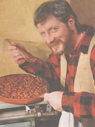

Whether you're trying to control your household food budget or just interested in tasting what is fast becoming a national favorite, venison will prove to be an inexpensive and versatile meal for your table.
I'm the last person that you'd want to invite on a hunting trip. It isn't because of my lack of enthusiasm at the prospect of killing those cute little deer or because I'm not equipped to pack a mean lunch. The truth is I just end up being a royal pain (or so my relatives say). For instance, I'm busy tripping over logs when silence is critical. I accidentally drop the thermos out of the tree stand (or I fall out of the tree stand), causing every creature within 50 miles to flee. Of course I require frequent bathroom breaks after all that coffee. And to top it off, I'm always cold. But every year, here we are in northern Wisconsin on our relatives' farm, wearing neon orange and combing the woods for signs of deer. I'm determined to be a good sport so I usually tag along with my husband whose greatest fear is that as soon as the ten-point buck is two feet away, I'll no longer be able to control myself and yell, "Run for your life!"
Sure, I'm an animal lover, and you might well ask how I juxtapose that opinion with serving meat on the table, but the issues of how and why you get by in the country can't be summed up so simply. Once you've spent some time living in a moderately forbidding wilderness (in our case, the upper peninsula of Michigan), your perspective may be altered. Hunting for food quickly becomes a matter of economic survival. Growing our own produce and hunting for meat helps to stretch food dollars in an area where quality food at a reasonable price is simply not always available.
While game hunting may not be the rage everywhere, game eating is becoming the trend - with venison consumption doubling nationwide in the last four years. Many of the Midwest's upscale restaurants are featuring American cuisine using regional foods, including game, and with good reason. Game meat is lower in fat, with a four-ounce serving of venison containing only four grams of fat as opposed to an equal serving of beef with 17 grams of fat. A deer has only 5% body fat compared to 25% for domestic animals because game are on the run. Some of the fat is the highly unsaturated omega-3 type, originally thought to be found only in fish.
Venison is also a high-protein meat, containing iron, zinc, and many B vitamins. Obviously, game is raised naturally so it's free of the injected growth hormones, antibiotics, and dyes. Finally, the best part is the flavor. We've domesticated the flavor right out of our meat - consequently becoming heavy handed with the salt shaker to compensate.
A QUESTION OF NUTRITION
Wild game not only has one-third the fat of beef, but it isn't laden with chemical.
Preparing Venison for Cooking
How the deer is dispatched, transported, dressed, and stored will affect the texture and flavor of the meat. The age and diet of the animal also affect the quality. Some people dislike venison because they think it has a strong odor and gamey taste. This can occur when the deer isn't bled immediately and aged (cooled) properly. A strong gamey taste can also be avoided by removing all fat and tallow (the thin membrane next to the fat) before cooking or freezing. At this stage of the game it pays to hang out with hunting experts or to visit your local library.
The back and saddle of the venison are the most tender cuts, and the shoulder and leg should be used for long-cooking recipes such as stews or chili. Tougher cuts can be tenderized by marinating or cooking them in acidic ingredients such as wine, vinegar, or tomatoes. Herbs and spices such as oregano, thyme, sage, rosemary, nutmeg, cinnamon, and allspice can help disguise a strong-tasting meat. Since venison is a lean meat, some additional fat may be needed, such as olive oil, beef or chicken broth, or a small amount of smoked bacon or pancetta. Since game isn't subject to USDA inspection, I'd avoid cooking the meat rare and recommend a pink interior so the internal temperature will be higher. Like lamb, venison should be served immediately before the fat congeals.
Storing and Freezing
Venison can either be hung at 36–40°F to age (break down the cells) or wrapped and aged in the freezer. The game should be wrapped in small packages to avoid excess raw meat. The meat will stay fresh for up to 12 months at 0°F if it is double-wrapped in freezer paper, avoiding freezer burn. Once defrosted, the meat should be cooked within 24 hours unless it's in a marinade. Ground meats should be used sooner.
NO NEED TO WASTE
The shoulder and leg, though not the most tender cuts, are great for stews and chili.
The dried cranberries add a delicious sweetness and texture to this stew. If they are unavailable in your area, they can be mail-ordered through: American Spoon Foods, P .O. Box 0566, Petoskey, MI 49770-0566.
1 1/2 pounds boneless venison stew meat - cut into 1/2-inch pieces 1/4 cup flour 1 tablespoon olive oil 1 teaspoon olive oil1 large onion - peeled, halved, and thinly sliced 2 large cloves garlic - minced1 1/2 cups dry red wine (white wine will also work) 1 1/2 cups unsalted beef flavored broth (I use Health Valley natural beef broth, which is without lard) 1 teaspoon sugar 1/2 teaspoon allspice 1/4 teaspoon cayenne pepper 1/2 teaspoon salt freshly ground pepper 1 cup dried cranberries (see above) dash olive oil2 cups mushrooms - thinly sliced (I use brown crimini mushrooms, but plain button or wild mushrooms are also good) chopped parsley
Preheat oven to 350°F. Pat the venison pieces dry with a paper towel. In a plastic bag toss the venison and the flour until the meat is coated. Remove the meat, shaking loose any excess flour. In a large skillet sauté the venison in the tablespoon of oil on medium-high heat until the pieces are brown and crisp. Place in a covered, shallow casserole, using at least a 3-quart size. In the same skillet, sauté the onions briefly in the teaspoon of oil until they start to brown. Add the garlic and sauté 30 seconds, then add the wine, beef broth, and the spices. Heat until boiling and pour into the casserole. Stir in the dried cranberries, cover, and bake for 1 1/2 hours. While the stew is baking, sauté the mushrooms briefly in the skillet and set aside. Start the root vegetables. (Recipe follows.)
After 1 1/2 hours, remove the stew from the oven and stir in the sautéed mushrooms. Check to see if the meat is tender and if the gravy needs additional liquid. Return the covered casserole to the oven for another 20 minutes or so. Serve over mashed root vegetables. Top with chopped parsley.
If you want your chili Texas-style, have the venison ground more coarsely or do it yourself in a food processor or meat grinder.
1 tablespoon olive oil 1 1/2 pounds ground venison (depending on how meaty you like it) 4 large cloves garlic - minced 1/4 teaspoon jalapeno pepper (1 small pepper)- seeded and minced 1 large onion - chopped 1 28-ounce can tomatoes with liquid 1/4 cup tomato paste (freeze the rest in a baggy) 1 teaspoon raw apple cider vinegar 1 tablespoon chili powder1/4 teaspoon salt freshly ground pepper3/4 teaspoon allspice 1 teaspoon each: ground coriander, dried basil, ground cumin, dried oregano, sugar 2 15-ounce cans red (or kidney) beans - rinsed and drained 1 1/2 cups water1 medium red pepper - diced 1 poblano or green pepper (or 2 peppers if you like more vegetablesoptional toppings: low fat sour cream or yogurt, grated cheddar cheese, chopped green or red onions, chopped cilantro
In a large soup pot, heat the oil over medium-high heat, add the venison, and sauté until browned. Stir in the garlic, hot pepper, and onions and sauté until limp. Add the rest of the ingredients, except the sweet pepper, and simmer uncovered for 30 minutes. Add the sweet peppers and simmer covered about another 30 minutes until they're tender. Add additional salt, seasonings, and water as needed. Serve with toppings if desired.
6 large brown potatoes (such as russet) - peeled and sliced into 1/2 -inch circles 3 large rutabagas - peeled and sliced into 1/2-inch circles 2 medium turnips - scrubbed and sliced into 1/2-inch circles 2 tablespoons butter (the amount can be reduced if you want lower-fat vegetables) 3 cloves garlic- minced1/4 teaspoon cayenne pepper 1/4 teaspoon nutmeg 1/2 teaspoon salt freshly ground pepper 1/3 cup hot vegetable water or low-fat milk
In a large soup pot, place a vegetable steamer and 1 1/2 inches of water. Lay the potatoes, rutabagas, and turnips on the steamer. Cover and simmer for about 1 hour, until the vegetables are tender. (Check after about 30 minutes to make sure there's still enough water in the pot.) In a small pan sauté the garlic in butter for about 30 seconds. Add the seasonings and set aside. When the vegetables are done, pour out the water into a measuring cup. Dump the vegetables into the pot and mash with a potato masher. Add the butter mixture and a little vegetable water at a time until your vegetables are mashed potato consistency. It will be slightly lumpy, so if you prefer a smooth texture, use a hand electric mixer.
These lean steaks take only a few minutes to prepare. The secret to a tender venison steak is to not overcook it.
4 venison steaks (about 1 pound) - sliced no thicker than 1/2 inch 1 tablespoon olive oil1 clove garlic - peeled and smashed 2 small onions - peeled, halved, and cut into thin slices 1 cup mushrooms - thinly sliced (wild mushrooms, shiitake, or other varieties may be used) - optional 1 tablespoon unsalted butter1/2 teaspoon dried oregano salt, dash cayenne pepper, and freshly ground pepper 2 tablespoons dry sherry (or dry white wine)
Pat the steaks dry with paper towels. In a large skillet sauté the garlic, onion, and mushrooms (if used) on medium- high heat until they start to brown. Remove from pan, leaving oil in pan. Add the butter, and heat again over medium- high heat. Before the butter starts to brown, sear the steaks on one side, letting them cook about 1 minute. Season with the oregano, salt, cayenne, and pepper, and flip over. Quickly sauté the steaks for another 1 to 2 minutes until they're pink but not bloody on the inside. Top with the vegetables and the sherry. Cook for 30 seconds. Serve immediately with wild rice.
Every year my relatives in Green Bay, Wisconsin, prepare this jerky immediately after dressing the deer, using up the small scraps. The meat needs to marinate 24 hours before baking.
Marinade:
1/4 cup tamari soy sauce 1 tablespoon Worcestershire Sauce 1/4 cup A-1 Steak Sauce1 teaspoon liquid smoke (hickory flavor) 1/2 teaspoon garlic powder 1/2 teaspoon salt1/2 teaspoon ground pepper 1/2 teaspoon onion powder
Whisk ingredients together. Set aside.
You'll need 1 1/2 pounds of venison meat, trimmed of all fat and connective tissues. Partially freeze the meat. Slice (along the grain) 1/4-inch slices that are about 4 to 6 inches long. Lay the strips in a crisscross pattern in a large zipper-seal freezer bag or covered plastic container. Pour the marinade over the venison. Marinate 24 hours, turning the meat over at least twice. Remove from the bag and drain on the paper towels. Lay the slices on a meat rack or on the oven rack with a drip pan or heavy duty foil underneath it. Bake at 200°F for about 4 hours until firm. (The meat gets harder after it cools.) Store in a covered jar in the refrigerator.
|
|
 |
|